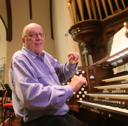

Stories of Westminster United Church & its People / Page
176
Donald Menzies Organist
Don’s interest in playing the organ began at an early age when
he was growing up in Calgary where he studied with Cyril Mossop
at Knox United Church there. He filled in as organist on many
occasions for weddings and church services. Moving back to
Winnipeg he continued studies with Filmer Hubble and Barry
Anderson. He was the evening organist at Young United Church
and then the organist and choir director at Rosedale United
Church for three years before being appointed at Westminster in
1966. Don’s academic credentials include Associate of the Royal
Conservatory of Music in Toronto (ARCT), Licentiate Trinity
College London (LTCL), and Licentiate in Music Manitoba (LMM).
During his fifty plus years at Westminster Church, Don has been featured
frequently as a recitalist
with the former national CBC-FM Organists in Recital program, has performed as
part of the
Westminster Concert Organ Series, has performed with the Manitoba Chamber
Orchestra and has
accompanied the Winnipeg Singers and the Winnipeg Philharmonic Choir on several
occasions.
In September 2016 he was invited to perform the Saint-Saëns’
Organ Symphony
with the Winnipeg
Symphony Orchestra at Westminster Church as part of a community celebration of
his 50 years of
service at Westminster Church (picture above). Don has also performed concerts
in rural Manitoba
and beyond: namely Brandon, Morden, Pinawa, Souris, St. Adolphe, St. Claude,
Thunder Bay,
and Winkler.
He is co-founder and Artistic Director of the Westminster Concert Organ Series,
founded in 1989.
This series features Westminster’s four manual Casavant Organ in three concerts each year.
The Sunday concerts normally take place late October, late January or early
February, and in the two
to three week period after Easter. These concerts feature Canadian and
international organists, and
on occasion, performances with other instrumentalists or choirs. The Series has
featured organists
from many major cathedrals in the world including Westminster Abbey, St. Paul’s Cathedral,
Table
of Contents
Music at Westminster
